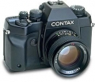

器材库 > 胶片单反相机 > RX

规格总览
产品类型
手动对焦胶片单反相机
发布日期
1993
厂家推荐价格
94,000.00 （日元）
镜头卡口
Contax/Yashica C/Y
停产
是
取景规格
取景器
眼平五棱取景器, 固定
取景范围
95%
取景放大倍率
0.8x倍
对焦屏
可更换
取景器信息
数字焦点显示,快门速度,光圈,A.B.C显示,闪光灯状态指示,拍摄张数,曝光方式,曝光补偿提示,测光方式
景深预视
有
曝光控制
测光模式
中央重点测光
测光范围
CW：EV 1 - 20,点测光： EV 5 - 20EV
ISO感光度
DX：ISO 25 - 5000,手动设定：ISO 6 - 6400
曝光补偿
±2EV以1/3EV级调整
自动包围曝光
3张连续曝光补偿量为±0.5EV或±1EV
多重曝光
有
自动曝光锁
有
快门
快门类型
电子控制，纵走式，焦平面快门
快门速度
Av和P模式：16s - 1/4000s,Tv和手动：4s - 1/4000s、B门,同步速度：1/125s
B门
有
快门释放
电磁控制
快门线插孔
有
内置闪光灯
闪光模式
TTL
后帘同步
有
过片系统
过片模式
连续
最高连续过片速度
3fpsfps
用户自选功能
用户自选功能
9
电源
电池
1枚6V 2CR5,锂电池
电池检测
有
外观
材质
铝合金模铸机身，顶盖和底部为铜合金
颜色
黑色
尺寸
151×104.5×59mm
重量
810g
mztwyw2015-02-02 01:594.5 分
操作性 5.00功能性 4.50美观性 4.50趣味性 4.50耐用性 4.00性价比 4.50
playboyroyal2011-12-09 17:205 分
操作性 5.00功能性 5.00美观性 5.00趣味性 5.00耐用性 5.00性价比 5.00
上帝武装2008-01-06 17:114.42 分
操作性 4.50功能性 4.50美观性 5.00趣味性 4.50耐用性 3.50性价比 4.50
独立懂事2006-11-21 16:144.5 分
操作性 5.00功能性 5.00美观性 4.50趣味性 4.00耐用性 4.00性价比 4.50
RX22006-08-16 15:314.58 分
操作性 5.00功能性 4.50美观性 4.50趣味性 4.50耐用性 4.00性价比 5.00
熊转悠注意2006-06-11 11:243.92 分
操作性 4.50功能性 4.50美观性 4.50趣味性 4.50耐用性 2.00性价比 3.50
F1.02005-11-26 08:423.33 分
操作性 4.00功能性 4.00美观性 4.00趣味性 3.50耐用性 1.00性价比 3.50
熊转悠注意2005-09-13 14:28
EDI2005-09-07 14:494.92 分
操作性 5.00功能性 5.00美观性 5.00趣味性 5.00耐用性 5.00性价比 4.50
间色2005-05-03 17:584.92 分
操作性 5.00功能性 5.00美观性 4.50趣味性 5.00耐用性 5.00性价比 5.00
罗莱2005-04-05 15:244.83 分
操作性 5.00功能性 5.00美观性 5.00趣味性 5.00耐用性 5.00性价比 4.00
经典是硬道理2004-11-14 09:514.25 分
操作性 4.50功能性 4.50美观性 4.00趣味性 4.00耐用性 5.00性价比 3.50
熊转悠注意2004-08-15 12:34
agains2004-07-04 00:014.83 分
操作性 5.00功能性 5.00美观性 5.00趣味性 4.50耐用性 4.50性价比 5.00
ohsmen2004-07-03 15:344.58 分
操作性 4.50功能性 4.50美观性 4.50趣味性 4.50耐用性 5.00性价比 4.50
lwy_c891012004-06-12 12:004.5 分
操作性 4.50功能性 4.50美观性 5.00趣味性 4.50耐用性 4.50性价比 4.00
大肚能容2004-04-29 17:334.92 分
操作性 5.00功能性 4.50美观性 5.00趣味性 5.00耐用性 5.00性价比 5.00
表情严重2003-12-25 20:154.75 分
操作性 5.00功能性 4.50美观性 5.00趣味性 5.00耐用性 4.50性价比 4.50
Quins2003-01-09 11:084.83 分
操作性 5.00功能性 5.00美观性 5.00趣味性 5.00耐用性 4.50性价比 4.50
阿奔2002-12-28 16:374.17 分
操作性 4.50功能性 4.00美观性 4.00趣味性 4.00耐用性 4.50性价比 4.00
滔滔2002-10-12 14:454.75 分
操作性 5.00功能性 4.50美观性 4.50趣味性 5.00耐用性 5.00性价比 4.50
云岭晴岚2002-07-01 15:004.42 分
操作性 4.50功能性 4.50美观性 4.50趣味性 4.50耐用性 4.50性价比 4.00
茄子2002-04-09 21:024.25 分
操作性 4.50功能性 4.50美观性 4.50趣味性 4.50耐用性 4.50性价比 3.00
产品图 / 样片
RX
评测 / 相关文章
该产品暂无存档的评测文章